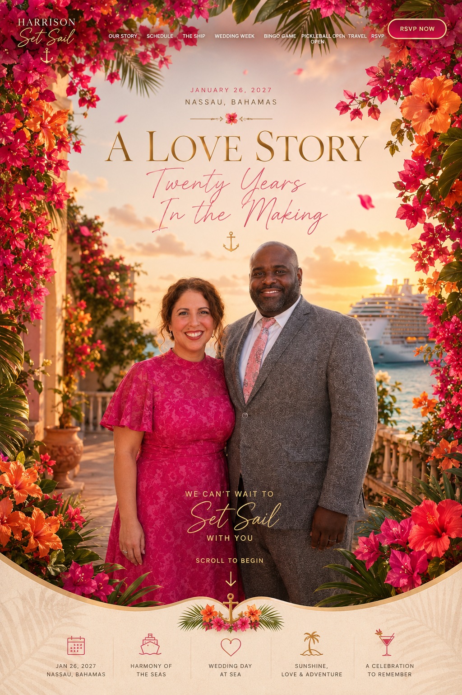

Scroll to begin ↓A celebration at sea
Twenty years brought us here.
Now we are bringing the people we love aboard one unforgettable adventure—with a welcome party in white, CocoCay, a sunrise wedding, friendly competition, and plenty of time together.